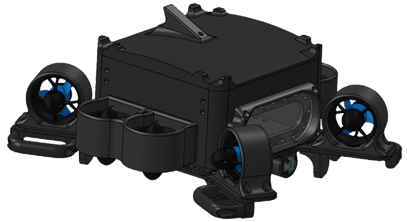
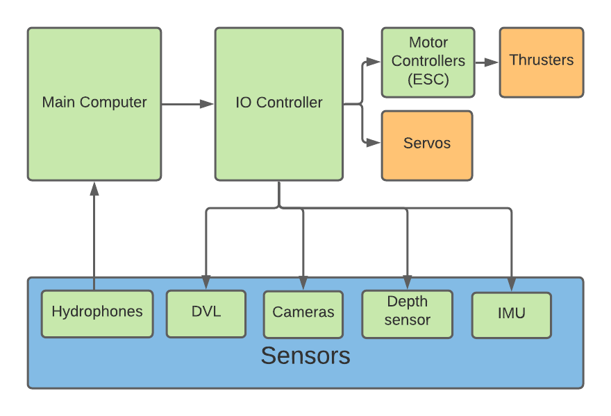

// Our underwater robot!
As Team President of MuddSub, I designed the PCB system for our new robot, Crush. So that meant designing the circuits, laying out the boards, and figuring out which parts we needed. I also worked with the mechanical subteam to figure out how everything would fit inside the electronics enclosure. And there are plenty of logistical and administrative things to take care of when you're running a club!


On the electrical side, I also work with the team to design, connect, and test our sensors. We test directional hydrophones to help figure out where the robot is, and we're working with split-aperture correlators to make that position estimate more precise. The schematic above shows how our electrical systems connect.